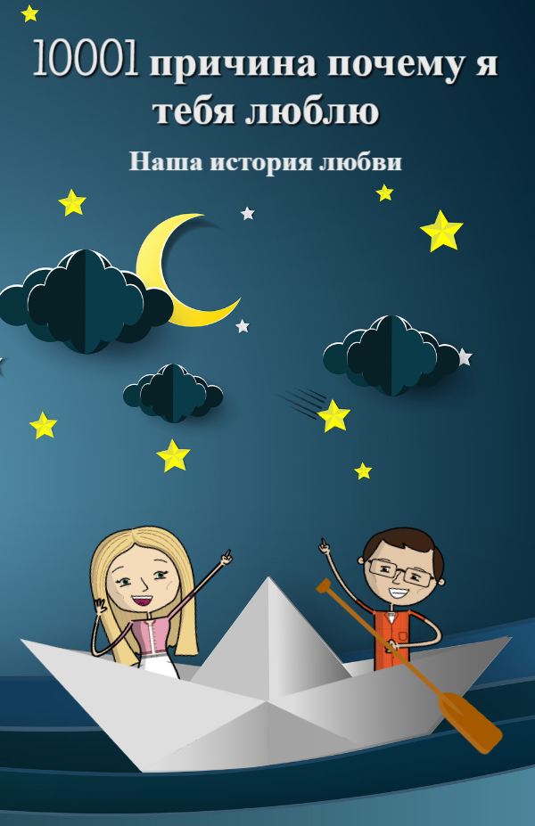
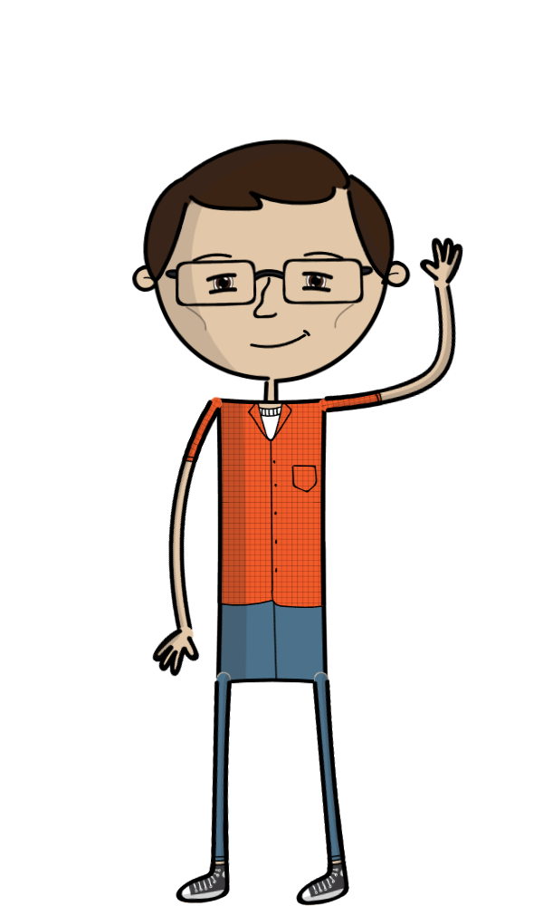
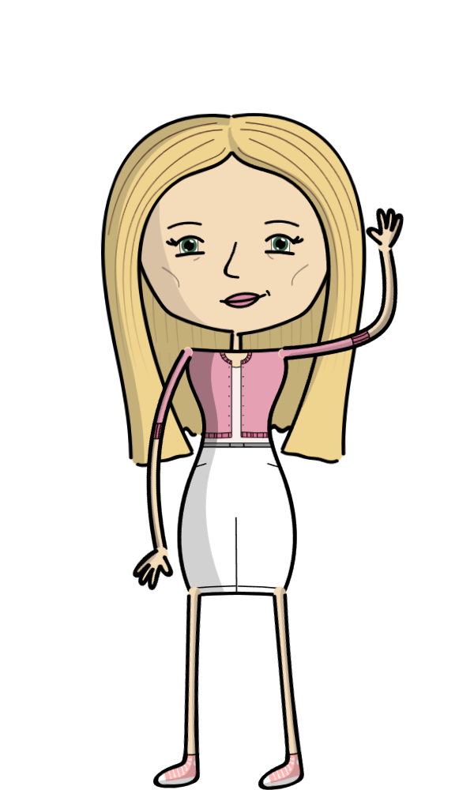
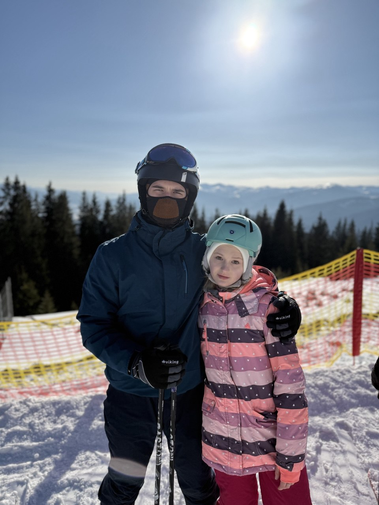
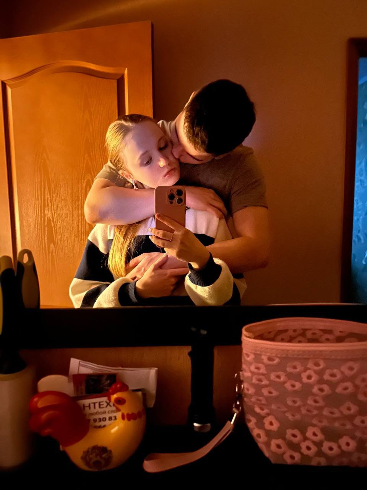

РЕЦЕНЗИЯ ...
Так вот, каждый пишет историю своей любви/отношений/симпатии и так далее. И я искренне рад что данную историю я пишу именно с тобой. Потому что я не могу представить подобное с кем-то другим. Потому как за всю свою жизнь ты единственный человек которому я стал доверять настолько что без проблем могу поделиться самым наболевшим и показать свои истинные эмоции. И я рад что мы вместе не смотря на то что происходит у нас в отношениях через трудности которые мы проходим и так далее. Меня радует что это только закаляет наши отношения. Я правда благодарен судьбе за то что однажды встретил тебя Наташа и я правда стал счастлив рядом с тобой и ты делаешь меня счастливее с каждым днем. Благодаря тебе моя жизнь наполняться смыслом и ты единственная причина почему я некогда не опускаю руки и всегда везде иду до конца.
А ТЫ ПОМНИШЬ КАК ВСЕ НАЧИНАЛОСЬ?
Да, я знаю, я тебя очень сильно задолбал уже с этой истории как ты мне растопила сердце тем что ты вела тележку в Новусе но все же это действительно заставило биться мое сердце чаще, зрачки расширяться, руки потеть и реч трястись. Да, это не примечательно было я согласен но это имело огромное значение для меня. Тогда я понял что ты мне нравишься, просто нравишься ничего более. Но это был первый шаг перед тем что мы имеем сейчас и первый шаг перед тем как я стал тем кем стал и ты стала тем кем стала и то что мы любим друг друга. Ахахах) но история правда смешная и инертная!
СПАСИБО ТЕБЕ ЗА ...
Ты коорденально изменила мою жизнь на до и после. Я был не общительным не примечательным парнем который имел очень много амбиций и очень много страхов и еще очень много тараканов в голове и с некоторыми проблемами с головой а именно начало наших отношений припало на мое очень сильное выгорание и на повторение бесконечных панических атак для меня. Но ты изменила во мне это и я правда очень тебе за это благодарен. Благодаря тебе на данный момент времени у меня уже почти нет таких проблем и ты меня очень хорошо социализировала и развила во мне очень чуткого человека который начал правильно выражать свои эмоции. Спасибо тебе большое за это. И ты многое для меня делаешь даже не зная про это. Потому что когда ты меня слушаешь с моих плечь спадает кучу груза и я могу себя на некоторое время почувствовать простым беззаботным ребенком. А также спасибо тебе за то что ты сделала меня переднее и за то что ты дала согласие встречаться со мной и сделала из мальчика мужчину который учитывает то что на мне лежит отвецтвенность за нах двоих и помогла принять очень много всего что также изменили меня к лучшему и сделали намного успешнее чем все остальные и чем я был ранее.
Я РАД ...
Я рад за то что ты все время поддерживаешь меня не в зависимости от обстоятельств и за то что ты всегда морально рядом со мной. Я рад что я могу делить с тобой все что я имею. И я рад что ты стала тем человеком который для меня стал целой вселенной которую я открываю все больше и больше с каждым днем и эти открытия делают меня все счастливее и счастливее. Я безумно счастлив что ты обходительна со мной и всегда сделаешь что я попрошу если это правда нужно и это уместно. И я счастлив что у нас такие крепкие отношения и то что мы видем будущее вместе и не спешим никуда а проходим все этапы отношений совместной жизни и так далее потихоньку и меняемся в соотвествии с обстоятельствами что делает наши отношения еще более крепкими и занимательными и обходительными.
ТЫ СТАЛА ДЛЯ МЕНЯ ...
Ты стала для меня полноценным членом семьи потребности которой я ставлю выше своих. Ты стала для меня лучшим другом. Ты стала для меня смыслом жизни. Ты стала для меня лучшим советчиком. Ты стала для меня лучшим оратором речи которого меня очень вдохновляют и заставляют задуматься. Ты стала для меня психологом и неврологом который без проблем может меня выслушать и тем самым облегчив мою душу. Ты стала всем для меня. И я надеюсь на то что ты станешь моей женой в будущем.
ЭПИЛОГ ...
Наташа, знаешь я тебя безумно люблю и даже когда я делаю что-то не так помни о том что я всегда буду рядом, я всегда буду тебя любить, помни о том что все трудности и разногласия проходят. Я правда не представлю свою жизнь без твоей моськи рядом. Ты всегда была для меня иконой красоты, тонкого вкуса, мудрых советов и много другого. Спасибо большое за то что ты всегда рядом со мной. Спасибо большое за то что ты придерживать меня. Спасибо тебе огромное за все что ты для меня делаешь. Извини что я это не часто говорю но я всегда прокручиваю у себя это в голове. И я всегда прокручиваю то что моя девушка самая самая во вселенной. Я с уверенностью могу сказать что ты для меня всегда будешь оставаться иконой всего и что ты у меня самая самая. Я безгранично люблю тебя за твою многогранность и за абсолютно все за каждый твой атом за абсолютно все. А особенно за преданность. Спасибо тебе еще раз за все. И спасибо обстоятельствам за то что мы вместе и действительно любим друг друга до чертиков, до бабочек в животе, до мурашек по коже. Наташа, я люблю тебя. И я буду повторять тебе эти слова каждый день хоть по 1000 раз в час потому как я некогда не устану это говорить. Я правда очень предан тебе. И правда безумно тебя люблю! Но помни пожалуйста также про то что все должно возвращаться и о том о чем мы с тобой недавно серьезно говорили. Хорошо? Я надеюсь ты ответила утвердительно. И помни что ты мое солнышко и ты своим светом освещаешь мне этот блеклый мир и дорогу по которой мне луток всего идти!
Я тебя безумно люблю! I love you madly! Te amo locamente! Ich liebe dich wahnsinnig! Je t’aime follement! Ti amo follemente! Eu te amo loucamente! 我疯狂地爱你！ 私はあなたを狂ったように愛しています！ 나는 너를 미친 듯이 사랑해! أنا أحبك بجنون! मैं तुम्हें पागलों की तरह प्यार करता हूँ! Te iubesc nebunește! Seni deliler gibi seviyorum! Σ' αγαπώ τρελά! Ik hou waanzinnig veel van je! Jag älskar dig galet mycket! Jeg elsker dig vanvittigt! Ma armastan sind hullumeelselt! Es tevi neprātīgi mīlu! Aš tave beprotiškai myliu! Tôi yêu bạn điên cuồng! Tôi yêu em điên cuồng! ฉันรักคุณอย่างบ้าคลั่ง! אני אוהב אותך בטירוף! Nakupenda sana! Inhobok b’mod miġnun! Rwy'n dy garu di'n wallgof! Tá grá craiceáilte agam duit! Ég elska þig brjálæðislega! Jeg elsker dig vanvittigt meget! Ég elska þig æðislega! I love ya like crazy! Te dua marrëzisht! Mən səni dəlicəsinə sevirəm! Seni çılgınca seviyorum! Ich liebe dich über alles! Mi amas vin freneze! Me t’estimi pazzamenti! Volim te ludo! Miluji tě šíleně! Ljubim te noro! Jag älskar dig vansinnigt! Jeg elsker deg sinnssykt mye! Ég elska þig ótrúlega mikið! Ahau ‘ofa atu lahi! Mahal na mahal kita! Gusto tika nga buang! Nagmahal ako sa imo nga wala na sa katinuan! Taim i’ ngra leat go hamaideach! S’agapó trela! Mamahalin kita ng labis-labis! Ana behibek jidan! Ich lieb di narrisch! Eg elskar teg vanvitugt! Te quiero como loco! Volim te do ludila! Tôi yêu anh đến điên cuồng! Amo-te loucamente! Ke a go rata go boima! Ich liebe dich wahnsinnig fest! Mwen renmen ou anpil! Ta iubesc nebuneste! T’estimi pazzamenti! Kimi seviyorum deliler gibi! Ma armastan sind hullumeelselt! Szeretlek őrülten! Te iubesc ca o nebună! Kaluguran daka masyado! Amo-te de forma louca! Te sakam do ludilo! אני אוהב אותך בטירוף! Ana uhibbuki jiddan! Kocham cię szalenie! Я тя обожаю! Ech hunn dech verréckt gaer! Ég elska þig eins og brjálæðingur! Lubim ta neskutočne! Kocham cię jak wariat! Wo ai ni feng kuang de! Watashi wa anata o kurutta yō ni aishiteimasu! Jeg elsker deg vanvittig høyt! Unë të dua çmendurisht! Volim te kao lud! Napenda wewe kama kichaa! Ti amo da impazzire!


.jpg)
.jpg)